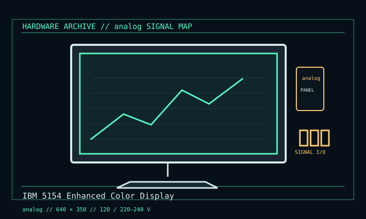

[ INDIVIDUAL COMPONENT // DISPLAYS ]
IBM 5154 Enhanced Color Display
EGA color CRT, introduced with the IBM PC/AT in 1984. analog

IDENTIFICATION: Verify the complete model/revision on the rear label. Specifications are tied to the cited manual/specification; variant-dependent values are qualified rather than generalized.
Specifications
| Catalog subcategory | Crt Displays |
|---|---|
| Exact product/family | IBM 5154 Enhanced Color Display |
| Era | EGA color CRT, introduced with the IBM PC/AT in 1984. |
| Tube / image | 13-inch CRT; 0.31 mm dot pitch; EGA 640 × 350 mode. |
| Signal / scan | DE-9 direct-drive EGA; 15.75 kHz CGA-compatible and 21.8 kHz EGA modes, non-interlaced. |
| Power / region | 5154-001 is 120 V; 002/003 are 220/240 V, 50/60 Hz. Check rear label before applying mains. |
| Mechanical | Tabletop CRT with integral signal lead; regional power cord and assembly differ. |
Revision, signal & host compatibility
Use an EGA adapter and documented IBM EGA timings. A DE-9 shell is not VGA; passive DE-9-to-VGA adapters do not convert pinouts or signal levels. Regional 5154 suffixes differ in mains voltage; verify label and board before service.
Match source signal type, sync/timing, connector pinout, bandwidth and power path to this exact display. Physical connector fit alone does not establish electrical or timing compatibility.
Preservation & repair notes
Record mains variant and geometry. Check focus, color balance, sync and degaussing. IBM manual scan identifies proper service information; CRT stores lethal high voltage and requires qualified technician.
Record model suffix, serial/date label, accessories, image condition, configuration, source document and repair history. CRT high-voltage, LCD backlight and OLED panel risks require appropriate service training and the correct manual.
Manufacturer manuals & references
- IBM Enhanced Color Display (5154) — IBM Hardware Reference ManualPrimary model reference scan: ratings, operation and controls.
- IBM 5154 EGA Display — CAPS WikiIndependent signal and region cross-reference.